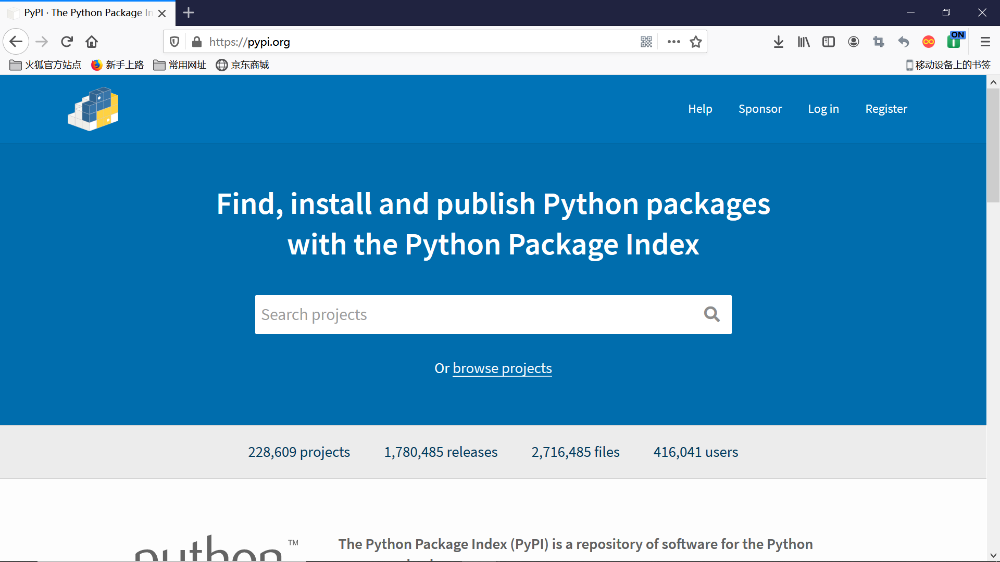

Python pip使用教程
pip是python的一个包管理器，用来从PyPI（Python Package Index）安装python第三方库。

pip 安装库：
pip安装库一行命令搞定：
1 | pip install <package name> |
PyPI因为是国外的网站，所以访问速度较慢，可以使用豆瓣的PyPI镜像: pip install -i https://pypi.douban.com/simple <package name>
- pip 卸载库：
1 | pip uninstall <package name> |
- pip 查看安装了的库：
1 | pip list |
或者：
1 | pip freeze |
- pip 查看一个库的信息：
1 | pip show <package name> |
- pip 检查库冲突：
1 | pip check |
- pip 下载库的源文件:
1 | pip download <package name> |